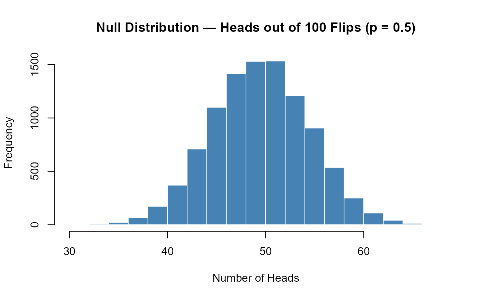
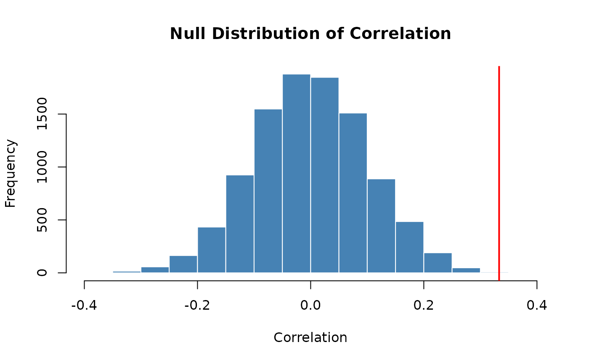
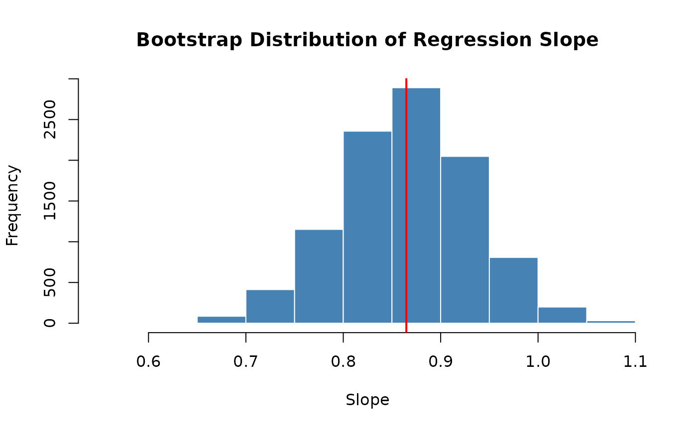

Transitioning to Base R: Simulation and Data Summaries
transitioning-simulation.RmdOverview
The SDS1000 package was designed to make it easier to learn the core ideas of statistics in R. Now that you have finished S&DS 1000, you are ready to analyze data using standard R tools that are available to every R user — no special package required.
This is Part 1 of a two-part guide. It covers the simulation and data summary functions. Part 2 covers inference and visualization.
In this article:
- Repeating a process —
do_it()→replicate() - Calculating
a proportion —
get_proportion()→mean()ortable() - Simulating
coin flips and die rolls —
rflip()andrroll() - Permutation
tests and bootstrapping —
shuffle()andresample_pairs()
Also in this series:
-
Part 2: Inference and
Visualization —
ptail(),cnorm(),ct(), distribution plots, and a complete worked example - Part 3: Parametric Hypothesis Tests — t-tests, chi-squared, ANOVA, correlation, and regression
- Cheat Sheet — printable one-page summary
Repeating a process: do_it() →
replicate()
What do_it() does
In S&DS 1000, you used do_it(n) to repeat a block of
code n times and collect the results into a vector. For
example, to build a sampling distribution of the
proportion of red sprinkles from samples of size 100:
# SDS1000 version
sampling_distribution <- do_it(10000) * {
get_proportion(rsprinkles(100), "red")
}You also used it to build a bootstrap distribution:
# SDS1000 version
bootstrap_dist <- do_it(10000) * {
mean(sample(price_sample, length(price_sample), replace = TRUE))
}And to build a null distribution by shuffling:
The base R equivalent: replicate()
The base R function replicate(n, expr) does exactly the
same thing: it evaluates the expression expr a total of
n times and returns the results as a vector.
results <- replicate(n, {
# your code here — the result of the last line is collected
})Here are the same three examples rewritten with
replicate():
Sampling distribution:
sampling_distribution <- replicate(10000, {
mean(rsprinkles(100) == "red") # get_proportion() → mean(v == "cat")
})Bootstrap distribution:
bootstrap_dist <- replicate(10000, {
mean(sample(price_sample, length(price_sample), replace = TRUE))
})Null distribution (shuffling):
The for loop alternative
You can also use a for loop, which makes the mechanics
more explicit:
n_repetitions <- 10000
sampling_distribution <- numeric(n_repetitions) # pre-allocate an empty vector
for (i in 1:n_repetitions) {
sampling_distribution[i] <- mean(rsprinkles(100) == "red")
}The replicate() approach is more concise; the
for loop makes the indexing transparent. Both produce
identical results.

Calculating a proportion: get_proportion() →
mean() or table()
What get_proportion() does
get_proportion(v, category_name) returns the proportion
of elements in vector v that belong to a named
category:
# SDS1000 version
p_hat <- get_proportion(one_sample, "red")Base R approach 1: mean() with a logical comparison
(recommended)
Because TRUE and FALSE are stored as
1 and 0 in R, taking mean() of a
logical vector gives the proportion of TRUE values:
p_hat <- mean(one_sample == "red")This form is especially useful inside replicate() since
it fits on one line:
sampling_distribution <- replicate(10000, {
mean(rsprinkles(100) == "red")
})Base R approach 2: table() and
prop.table()
Use these when you want to see all categories at once:
one_sample <- rsprinkles(100)
table(one_sample) # raw counts## one_sample
## green orange pink red white yellow
## 11 13 11 16 29 20
prop.table(table(one_sample)) # proportions for every category## one_sample
## green orange pink red white yellow
## 0.11 0.13 0.11 0.16 0.29 0.20Simulating coin flips and die rolls: rflip() and
rroll()
rflip() → rbinom()
rflip(num_flips, prob) simulates flipping a coin
num_flips times and returns the count of
heads. Under the hood it is one call to rbinom():
Simulating 100 fair coin flips (class 12 / 13 style):
## [1] 56To build a null distribution of head counts inside
replicate():
set.seed(7823)
null_dist <- replicate(10000, rbinom(1, size = 100, prob = 0.5))
hist(null_dist,
main = "Null Distribution — Heads out of 100 Flips (p = 0.5)",
xlab = "Number of Heads",
col = "steelblue", border = "white")
To return a proportion instead of a count, divide by
num_flips:
# rflip(48, prob = 0.6) / 48 ← SDS1000
rbinom(1, size = 48, prob = 0.6) / 48 # Base R
rroll() → rmultinom()
rroll(num_rolls, prob) simulates rolling a die
num_rolls times and returns the count of
each face. It wraps rmultinom():
rmultinom() returns a matrix, so
as.vector() is needed for a plain vector. For a 12-sided
die as used in class 23:
set.seed(3319)
die_counts <- as.vector(rmultinom(1, size = 120, prob = rep(1/12, 12)))
names(die_counts) <- 1:12
die_counts## 1 2 3 4 5 6 7 8 9 10 11 12
## 9 9 15 8 9 8 7 15 9 8 15 8Permutation tests and bootstrapping: shuffle() and
resample_pairs()
These two functions are the building blocks of simulation-based
inference. shuffle() powers permutation
tests; resample_pairs() powers bootstrap
confidence intervals for paired variables.
shuffle() → sample()
shuffle(v) is a direct wrapper around
sample(v) — both return a random permutation of
v:
In a permutation test, shuffling one variable breaks its relationship with another, simulating the null hypothesis. For example, testing whether draft numbers were correlated with birth date:
set.seed(8812)
n <- 100
x <- rnorm(n)
y <- 0.3 * x + rnorm(n)
obs_stat <- cor(x, y)
null_distribution <- replicate(10000, {
cor(sample(x), y) # sample(x) = shuffle(x)
})
p_value <- mean(abs(null_distribution) >= abs(obs_stat))
hist(null_distribution,
main = "Null Distribution of Correlation",
xlab = "Correlation", col = "steelblue", border = "white")
abline(v = obs_stat, col = "red", lwd = 2)
p_value## [1] 8e-04
resample_pairs() → sample() with
replace = TRUE
resample_pairs(vector1, vector2) draws a bootstrap
resample from two paired vectors, keeping each pair together. The key is
generating one set of indices and applying them to both vectors:
# SDS1000 version
resampled_data <- resample_pairs(cigs_per_capita, cancer_rate)
resampled_cigs <- resampled_data$vector1
resampled_cancer <- resampled_data$vector2
# Base R version
n <- length(cigs_per_capita)
boot_inds <- sample(n, replace = TRUE)
resampled_cigs <- cigs_per_capita[boot_inds]
resampled_cancer <- cancer_rate[boot_inds]A complete bootstrap for a regression slope in base R (class 25 style):
set.seed(3047)
cigs_per_capita <- runif(50, 10, 40)
cancer_rate <- 2 + 0.8 * cigs_per_capita + rnorm(50, sd = 5)
obs_slope <- coef(lm(cancer_rate ~ cigs_per_capita))[2]
boot_dist <- replicate(10000, {
n <- length(cigs_per_capita)
boot_inds <- sample(n, replace = TRUE)
coef(lm(cancer_rate[boot_inds] ~ cigs_per_capita[boot_inds]))[2]
})
hist(boot_dist,
main = "Bootstrap Distribution of Regression Slope",
xlab = "Slope", col = "steelblue", border = "white")
abline(v = obs_slope, col = "red", lwd = 2)
## 2.5% 97.5%
## 0.7284031 0.9983307Quick reference
| Task | SDS1000 | Base R |
|---|---|---|
| Randomly permute a vector | shuffle(v) |
sample(v) |
| Bootstrap resample two paired vectors | resample_pairs(v1, v2) |
idx <- sample(n, replace=TRUE); v1[idx]; v2[idx] |
Continue to Part 2: Inference and Visualization
covers ptail(), cnorm(), ct(),
distribution plots, and a complete worked example tying everything
together.